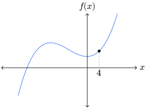
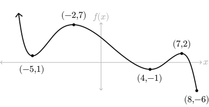
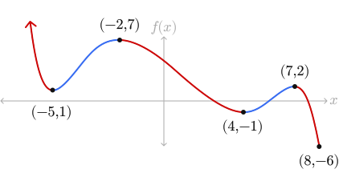
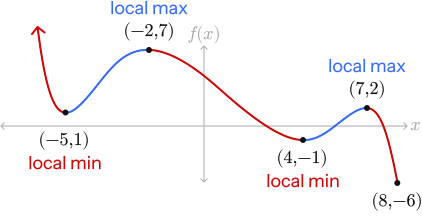

Write your name & answers on a sheet of paper.
?
??
?
??
When we worked with \(x\) and \(y\), the horizontal axis was the independent variable \(x\), and the vertical axis was the dependent variable \(y\).
Now, we're going to switch to the vertical axis being the outputs of the function, \(f(x)\). This value still depends on \(x\).
We write \(f(x)\) to represent the output of the a function, when the input is \(x\). (Recall: \(f(\)input\()=\) output.)
Our ordered pairs on the graph, now, will be of the form: \(\big(x,f(x)\big)\) instead of \(\big(x,y\big)\).
Below is a sketch of the graph of the function \(f(x) = 7x^3 - 45x + 320\) (not to scale). Find the coordinates of the indicated point.

Our coordinate will be of the form \(\big(x,f(x)\big)\), and we know \(x=4\).
Plugging that in to solve for the 2nd number, we get:
\(f(4)=7(4)^3-45(4)+320\) \( = 588\)
\( (4,588) \)
the domain \(D\) of a function is the collection of all valid inputs
the range \(R\) of a function is the collection of all possible outputs
Find the domain & range.
Domain:
Range:
\([-3,4]\)
\([-2,2]\)
Domain:
Range:
\((-\infty,\infty)\)
\((-\infty,\infty)\)
Domain:
Range:
\((-\infty,\infty)\)
\([1,\infty)\)
Domain:
Range:
\((-\infty,1]\cup (1,\infty)\)
\((-\infty,\infty)\)
a function (of \(x\)) is an equation that assigns each element in the domain to exactly one element in the range
the vertical line test checks whether a graph is a function or not; if it fails, then there is an input that has more than one output
Determine which of the graphs are functions using the Vertical Line Test. If it fails, draw a vertical line at one spot where the test fails.
Yes
NO!
NO!
Yes
a function is increasing if, as the inputs increase, the outputs increase
a function is decreasing if, as the inputs increase, the outputs decrease
a function is constant if, as the inputs increase, the outputs stay the same
a local maximum is where the function switches from incresaing to decreasing (like the top of a hill)
a local minimum is where the function switches from decreasing to increasing (like the bottom of a valley)
What are the intervals (of \(x\)) where the function is increasing?
\( (-5, -2) \cup (4, 7)\)
What are the intervals (of \(x\)) where the function is decreasing?
\( (-\infty, -5) \cup (-2, 4) \cup (7, 8)\)

What are the intervals (of \(x\)) where the function is increasing?
\( (-5, -2) \cup (4, 7)\)
What are the intervals (of \(x\)) where the function is decreasing?
\( (-\infty, -5) \cup (-2, 4) \cup (7, 8)\)

At what \(x\) are the relative maximum(s)?
\(x=-2,7\) (we don't include \(-\infty\) because it's not a point!)
At what \(x\) are the relative minimum(s)?
\(x=-5,4\)
At what \(x\) are the relative maximum(s)?
\(x=-2,7\) (we don't include \(-\infty\) because it's not a point!)
At what \(x\) are the relative minimum(s)?
\(x=-5,4\)

-> 3.3 homework